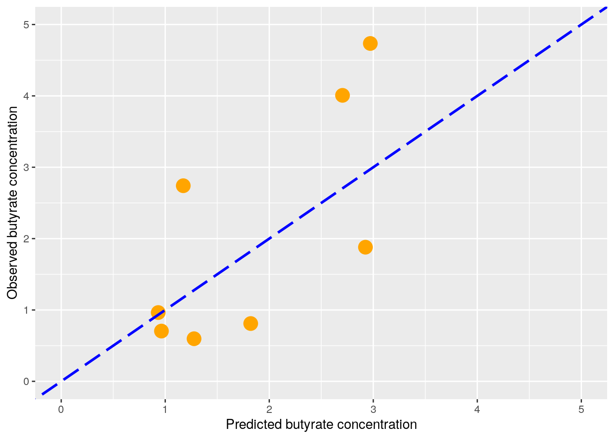
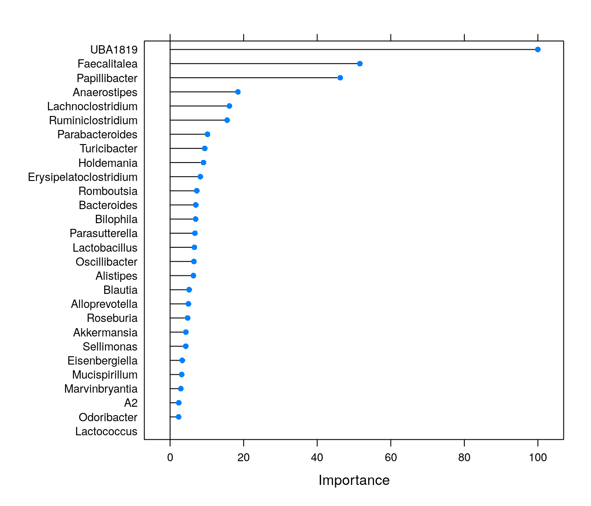

Chapter 8 Supervised learning
8.1 Random Forests
Creating a dataframe for modeling butyrate levels:
butyrate_df <- data.frame(cbind(y, x))
butyrate_df <- butyrate_df[,which(colnames(butyrate_df) %in% c("Butyrate", colnames(x)))]Performing nested cross validation, making train and test (validation) sets:
library(caret)
set.seed(42)
trainIndex <- createDataPartition(butyrate_df$Butyrate, p = .8, list = FALSE, times = 1)
butyrate_df_train <- butyrate_df[trainIndex,]
butyrate_df_test <- butyrate_df[-trainIndex,]Train models with 5-fold CV repeated 5 times:
set.seed(42)
fitControl <- trainControl(method = "repeatedcv", number = 5, repeats = 5)
rfFit1 <- train(Butyrate ~ ., data = butyrate_df_train,
method = "ranger",
trControl = fitControl,
importance = "permutation")Measure performance by prediction on test data:
test_predictions <- predict(rfFit1, newdata = butyrate_df_test)
# Plot predicted vs observed
pred_obs <- data.frame(predicted = test_predictions, observed = butyrate_df_test$Butyrate)
ggplot(data = pred_obs, aes(x=predicted, y=observed)) + geom_point(size = 5, color = "orange") +
xlab("Predicted butyrate concentration") + ylab("Observed butyrate concentration") +
lims(x = c(0,5), y = c(0,5)) +
geom_abline(linetype = 5, color = "blue", size = 1) # Plot a perfect fit line
Examining model by ploting feature importance:
plot(varImp(rfFit1))
We could investigate association directions by making partial dependence plots:
library(patchwork)
library(pdp)
# Calculate and plot partial dependence
top_features <- rownames(varImp(rfFit1)$importance)[order(varImp(rfFit1)$importance[,"Overall"], decreasing = TRUE)[1:6]]
pd_plots <- list(NULL)
for (feature in 1:length(top_features)) {
pd_plots[[feature]] <- partial(rfFit1, pred.var = top_features[feature], rug = TRUE) %>% autoplot() +
geom_hline(yintercept = mean(butyrate_df_train$Butyrate), linetype = 2, color = "gray") + # Show the mean of the training data as a dashed line
scale_y_continuous(limits=c(1.5,2.3)) # Harmonize the scale of yhat on all plots
}
wrap_plots(pd_plots)